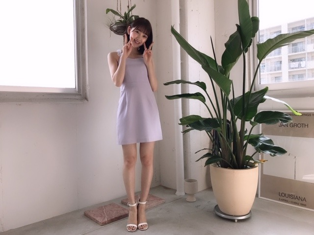

2019/0510Friくすんだ色に惹かれがち
BOMBさん発売しましたー！
わーいわーい
パステル紫すきー！


はしゃぐ3人



ぜひ、みてください！
告知
発売中「ベツコミ」
発売中「BRODY」日奈子と表紙 2期特集
発売中「ヤングマガジン」飛鳥と与田ちゃんと梅ちゃんと表紙巻頭
発売中「週刊少年マガジン」掛橋ちゃん(もんちゃん)と表紙巻頭
発売中「BOMB」与田ちゃん梅ちゃんと表紙巻頭
発売中「FINEBOYS」
5/11「ar」
5/20「東海ウォーカー」
最近は、トマトジュースを持ち歩いています
あとパイル地の鮮やかなブルー色のレッスン着のズボンが着心地良くてリピート中。
書いていたら眠くなってきました...
ので...
この辺で...
ではは☺︎
2019/05/10 16:54
コメント(281)
未央奈～☆☆
パステル紫も似合うなー
未央奈、めちゃくちゃ可愛い！
色んな雑誌の表紙に未央奈が出ていて
最近、本屋がパラダイスに見えてきた。笑
これだけたくさんの未央奈の表情や仕草や雰囲気や
ファッションや髪型が見られて、本当に幸せだな～
あ、俺もトマトジュースをよく飲むよ。
美味しいよね！
パステル紫も似合うなー
未央奈、めちゃくちゃ可愛い！
色んな雑誌の表紙に未央奈が出ていて
最近、本屋がパラダイスに見えてきた。笑
これだけたくさんの未央奈の表情や仕草や雰囲気や
ファッションや髪型が見られて、本当に幸せだな～
あ、俺もトマトジュースをよく飲むよ。
美味しいよね！
トマトジュース良いね～と書きつつ
長いこと飲んでへんかも(^-^;
久しぶりに買おうかな～(^-^)
長いこと飲んでへんかも(^-^;
久しぶりに買おうかな～(^-^)
デカイ！紙飛行機Σ(゜Д゜)五人乗り？(゜ロ゜)
パステル似合いますっ！ (^o^)/~
(^o^)/~
くすんだ色は心を静めてくれるので
落ち着きますね。
個人的に、10連休明けのハードな一週間を乗り越えた
今の気分にはとても心地よいです。
堀ちゃんの可憐さにも癒されます。
ムビチケ、買いましたよ。
モレラ岐阜で(笑)。
忙しいのに、頑張って更新、プロ意識を感じます。
告知のみの内容でもファンは十分うれしいので
無理しないでね。
落ち着きますね。
個人的に、10連休明けのハードな一週間を乗り越えた
今の気分にはとても心地よいです。
堀ちゃんの可憐さにも癒されます。
ムビチケ、買いましたよ。
モレラ岐阜で(笑)。
忙しいのに、頑張って更新、プロ意識を感じます。
告知のみの内容でもファンは十分うれしいので
無理しないでね。
ブログ更新ありがとうございます。
明るい紫、すごい似合ってます。
夏場に飲むトマトジュースは格別ですよ。
明るい紫、すごい似合ってます。
夏場に飲むトマトジュースは格別ですよ。
ではは。
ブログ更新ありがとう
いや、かわいすぎるてぇぇぇぇぇぇ！！
スリーショットヤバいてぇぇぇぇぇぇ！！
異次元やてぇぇぇぇぇぇ！！
いや、かわいすぎるてぇぇぇぇぇぇ！！
スリーショットヤバいてぇぇぇぇぇぇ！！
異次元やてぇぇぇぇぇぇ！！
未央奈ちゃんこんばんは！ありがとうございます！楽しみにしてます！頑張ります‼頑張って下さい！ありがとうございます‼楽しみにしてます。
未央ちゃん
ブログ更新ありがとう
雑誌のお仕事
多いと嬉しい
野菜ジュース飲んで
栄誉蓄えてます(笑)
トマトジュースも
飲みます
体調気をつけて頑張ってね
ブログ更新ありがとう
雑誌のお仕事
多いと嬉しい
野菜ジュース飲んで
栄誉蓄えてます(笑)
トマトジュースも
飲みます
体調気をつけて頑張ってね
未央奈ちゃん更新ありがとー！
相変わらずお綺麗でございます。
ドキドキする(>_<)
雑誌ちゃんとチェックするね！
トマトジュース久しく飲んでないなー。
今度買ってみよう！
(すぐ未央奈ちゃんに影響される人です)
ではでは
今日も素敵な１日を。
相変わらずお綺麗でございます。
ドキドキする(>_<)
雑誌ちゃんとチェックするね！
トマトジュース久しく飲んでないなー。
今度買ってみよう！
(すぐ未央奈ちゃんに影響される人です)
ではでは
今日も素敵な１日を。
未央ちゃんブログ更新ありがとう(o^^o)
今日握手会楽しんできてね(o^^o)
未央ちゃん可愛い
斉藤貴巳
今日握手会楽しんできてね(o^^o)
未央ちゃん可愛い
斉藤貴巳
トマトジュースに 何か を混ぜる
てゆうのにはまったことがあります。トマトはけっこう万能で あまり悲惨なことにはならなかったような記憶。普通なのは 塩&黒こしょうして 甘くピリッと とか
あと
冷蔵庫に余った野菜と残ったパンでガスパチョ(スペイン?の冷たいスープ)は今もたまに作ります。おいしい好き
レッドアイ(トマトジュース+ビール)は有名ですが そこに あんこを混ぜました... 記憶にありません
暑さにまだ体が慣れていないと思うので 体調気をつけてくださいー。
てゆうのにはまったことがあります。トマトはけっこう万能で あまり悲惨なことにはならなかったような記憶。普通なのは 塩&黒こしょうして 甘くピリッと とか
あと
冷蔵庫に余った野菜と残ったパンでガスパチョ(スペイン?の冷たいスープ)は今もたまに作ります。おいしい好き
レッドアイ(トマトジュース+ビール)は有名ですが そこに あんこを混ぜました... 記憶にありません
暑さにまだ体が慣れていないと思うので 体調気をつけてくださいー。
みおなちゃん
ブログ更新してくれてありがとうございます！
今日も可愛い！！笑
今日も頑張ってください！♪
ブログ更新してくれてありがとうございます！
今日も可愛い！！笑
今日も頑張ってください！♪
みおなちゃん
おはようございます
いや〜しっかし、
みおなちゃんはいつも可愛いなぁ
可愛すぎる
何か魔法の薬でも飲んでるの？
反則的な可愛さだよ
今日も一日可愛く頑張りましょうね
可愛いなぁ
おはようございます
いや〜しっかし、
みおなちゃんはいつも可愛いなぁ
可愛すぎる
何か魔法の薬でも飲んでるの？
反則的な可愛さだよ
今日も一日可愛く頑張りましょうね
可愛いなぁ
未央奈ブログ更新ありがとう!
BOMB見たよ!
これからも頑張ってね!
応援してるよ!
BOMB見たよ!
これからも頑張ってね!
応援してるよ!
ブログ更新ありがとー！！
可愛すぎるー！！
癒しです＾＾
可愛すぎるー！！
癒しです＾＾
おはよう！
コメントがめちゃめちゃ久しぶりになってしまって本当ごめんなさい、、
写真ありがと！
未央奈ってやっぱりパステル紫すごく似合うね。
最後の写真特に好きかも。。
健康にも気を使ってるのね。
コメントがめちゃめちゃ久しぶりになってしまって本当ごめんなさい、、
写真ありがと！
未央奈ってやっぱりパステル紫すごく似合うね。
最後の写真特に好きかも。。
健康にも気を使ってるのね。
堀ちゃん、大好きだよー
おはよう～
、、今日は、、名古屋も、、爽やかに、晴れそうだね～
、、すんだ～透き通った色に、、ひかれているのかと、、思ったけど、、
、、すんだ、、っていうよりも、、ずんだ(笑)みたいな、、美味しそうな新緑の色が、、好きなんだね～
、、仙台育ちの、、久保ちゃんにも、、(笑)、、よろしくね～
、、じゃあ、、またね～
、、今日は、、名古屋も、、爽やかに、晴れそうだね～
、、すんだ～透き通った色に、、ひかれているのかと、、思ったけど、、
、、すんだ、、っていうよりも、、ずんだ(笑)みたいな、、美味しそうな新緑の色が、、好きなんだね～
、、仙台育ちの、、久保ちゃんにも、、(笑)、、よろしくね～
、、じゃあ、、またね～
久しぶりに未央ちゃんのブログ見てます～
変わった部分と変わってない部分、
どっちもあって良いね。
話したらまた違う考え持ってそう。
夏が来るね！夏好き！
変わった部分と変わってない部分、
どっちもあって良いね。
話したらまた違う考え持ってそう。
夏が来るね！夏好き！
ブログの更新ありがとうございます。
与田ちゃんと梅さんと素敵ですね
衣装もこれからの季節にぴったり、涼しさを感じました
告知ありがとうございます！
トマトジュース最近飲んでないですが、空腹時に飲んだりすると、気持ちお腹が満たされますね。なんだか飲みたくなってきました。
今日もお仕事頑張って下さい
それではまた。
与田ちゃんと梅さんと素敵ですね
衣装もこれからの季節にぴったり、涼しさを感じました
告知ありがとうございます！
トマトジュース最近飲んでないですが、空腹時に飲んだりすると、気持ちお腹が満たされますね。なんだか飲みたくなってきました。
今日もお仕事頑張って下さい
それではまた。
ブログ更新ありがとうございます！
BOMB、BRODYを見ました。
2期生を更に応援したく、なりました。
これからも、応援してます。
BOMB、BRODYを見ました。
2期生を更に応援したく、なりました。
これからも、応援してます。
透き通るような白い肌でスレンダーな体型だし、未央奈ちゃんマジ可愛い♪
最近は結構雑誌とかでもよく出てるから、未央奈ちゃんの人気はぐいぐい上がってるんだと思うけど
取材や撮影、レッスンとかで忙しくて体調不良とかご飯をちゃんと食べれてるのか心配…
最近は結構雑誌とかでもよく出てるから、未央奈ちゃんの人気はぐいぐい上がってるんだと思うけど
取材や撮影、レッスンとかで忙しくて体調不良とかご飯をちゃんと食べれてるのか心配…
堀ちゃん
握手会お疲れ様です
BOMBもだけど、本屋行ったら、雑誌コーナーの表紙が堀ちゃんばっかりでおーってなりました
口が違う写真可愛いです（間違い探し？）
ファインボーイズ毎月買ってるんですけど、堀ちゃん出ててびっくりしました
シンプルな服装が1番ということで、自分のファッションコンセプトが堀ちゃんと似ていてちょっと嬉しいです
白ティー（無地）&黒スキニーが基本装備です（冬は+アウター）
動き見せたい時はプラスαやります（靴、キャップ、モノクロカラー以外の色プラス1色とか？）
トマトジュースたまに飲みたくなりますね
今日の握手会頑張って下さい
ありがとうございました
握手会お疲れ様です
BOMBもだけど、本屋行ったら、雑誌コーナーの表紙が堀ちゃんばっかりでおーってなりました
口が違う写真可愛いです（間違い探し？）
ファインボーイズ毎月買ってるんですけど、堀ちゃん出ててびっくりしました
シンプルな服装が1番ということで、自分のファッションコンセプトが堀ちゃんと似ていてちょっと嬉しいです
白ティー（無地）&黒スキニーが基本装備です（冬は+アウター）
動き見せたい時はプラスαやります（靴、キャップ、モノクロカラー以外の色プラス1色とか？）
トマトジュースたまに飲みたくなりますね
今日の握手会頑張って下さい
ありがとうございました
堀さん、こんにちは。
乃木坂46のイメージカラーは紫。乃木坂46を知るまでは別に何とも思っていなかったこのノーブルにしてクールな色が、今では街で見かけるだけで気持ちがわくわくします（笑）。
『BOMB』さんグラビアのパステル紫に身を包んだ堀さんたちがすてき。これから初夏にかけて紫がますます映える候を迎えますね。
ではまたコメント寄せます。おやすみなさい（←早いよ 笑）.
さらばだ、また会おう！（気球に乗って去りぬ〜）
乃木坂46のイメージカラーは紫。乃木坂46を知るまでは別に何とも思っていなかったこのノーブルにしてクールな色が、今では街で見かけるだけで気持ちがわくわくします（笑）。
『BOMB』さんグラビアのパステル紫に身を包んだ堀さんたちがすてき。これから初夏にかけて紫がますます映える候を迎えますね。
ではまたコメント寄せます。おやすみなさい（←早いよ 笑）.
さらばだ、また会おう！（気球に乗って去りぬ〜）
未央奈ちゃん、こんにちは♪
ボムを来週買いに行こうと思います。
本屋さんまで車で４０分ぐらいかかります。
あ・・コンビニで週刊少年マガジンを
少し閲覧しました。
未央奈ちゃんと掛橋ちゃんが出てました。
未央奈ちゃんも掛橋ちゃんもかわいかったよ。
掛橋ちゃんを知れてよかったです。
パソコンでインターネットを利用してます。
パソコンで読書して気分転換に
乃木坂４６公式ブログを閲覧しています。
今回のブログの写真は４枚目と５枚目が好きです。
僕はオフショルが好きです。
ではまたコメントしますね☆
ボムを来週買いに行こうと思います。
本屋さんまで車で４０分ぐらいかかります。
あ・・コンビニで週刊少年マガジンを
少し閲覧しました。
未央奈ちゃんと掛橋ちゃんが出てました。
未央奈ちゃんも掛橋ちゃんもかわいかったよ。
掛橋ちゃんを知れてよかったです。
パソコンでインターネットを利用してます。
パソコンで読書して気分転換に
乃木坂４６公式ブログを閲覧しています。
今回のブログの写真は４枚目と５枚目が好きです。
僕はオフショルが好きです。
ではまたコメントしますね☆
透明感の類義語は堀未央奈。
ずっと好きです応援してます
ずっと好きです応援してます
堀ちゃんの三期感も新鮮で良いですね。
BOMB、GETしたよぉ♪♪ 堀ちゃんはどんな色でも似合いそうだけど、個人的にはパステル系(淡い色合い)がより似合う気がする!!!(*´-`) どんなタイミングでも、堀ちゃん見るだけで何より癒される(〃▽〃)
未・央・奈さん。
３人ともかわいい。女のコはいいですね。
今日、すこぶる良い天気！！
未央奈はお仕事？それとも買い物かな？
布団フッカフッカです。では、又。
３人ともかわいい。女のコはいいですね。
今日、すこぶる良い天気！！
未央奈はお仕事？それとも買い物かな？
布団フッカフッカです。では、又。
トマトジュース好きやー♪＼(^o^)／
毎日飲んでるよー！
写真どれも可愛いけど、
最後の写真好き！(^_-)
毎日飲んでるよー！
写真どれも可愛いけど、
最後の写真好き！(^_-)
arの7月表紙おめでとうございます！
ブログ更新ありがとう！
透き通った肌。。羨ましいなあ
最近は通学中に二期生楽曲や、二期生がセンターの曲を聴いています。かき氷の片想いにハマりそう！
BOMB、金欠泣 買えない。。
これからも応援します！
透き通った肌。。羨ましいなあ
最近は通学中に二期生楽曲や、二期生がセンターの曲を聴いています。かき氷の片想いにハマりそう！
BOMB、金欠泣 買えない。。
これからも応援します！
すげぇ似合うな
紙飛行機でかすぎん！？
1回ぐらいその大きさのやつ飛ばしてみたい笑
1回ぐらいその大きさのやつ飛ばしてみたい笑
こんにちは～
今年も店にはラベンダー色の服がズラリと並んで、流行継続中ですね～
僕は先日、ずっと取り組んできたものが無事完成し、充実感に溢れています。
暑くなり体温調節が難しい時期ですが、健康にはお気を付けください！
今年も店にはラベンダー色の服がズラリと並んで、流行継続中ですね～
僕は先日、ずっと取り組んできたものが無事完成し、充実感に溢れています。
暑くなり体温調節が難しい時期ですが、健康にはお気を付けください！
みおにゃ！！
BONBさんいいね
写真の3人めっちゃ好き‼️
みおな足細っ‼️
可愛い ❤️
トマトジュース飲めない…
表紙多くていいね 嬉しい
なんでいつもそんなにキラキラ光ってるの？
にゃんの中では女神様だよ‼️みおなが人生の生き甲斐です‼️
これからも体に気をつけて、睡眠をたくさんとって色々なところで活躍してください‼️
大好き ❤ ❤
頑張って‼️
BONBさんいいね
写真の3人めっちゃ好き‼️
みおな足細っ‼️
可愛い ❤️
トマトジュース飲めない…
表紙多くていいね 嬉しい
なんでいつもそんなにキラキラ光ってるの？
にゃんの中では女神様だよ‼️みおなが人生の生き甲斐です‼️
これからも体に気をつけて、睡眠をたくさんとって色々なところで活躍してください‼️
大好き ❤ ❤
頑張って‼️
未央奈ちゃん大好き
めちゃくちゃかわいい
めちゃくちゃ
三日間ぐらい目を休ませた方が良いよ！。あんまり無理すると目が疲れて逆に疲れが出てくるよ
休めるときに休んだ方が良いよ！
落ちない程度にね笑
休めるときに休んだ方が良いよ！
落ちない程度にね笑
へい未央奈(･∀･∩)
未央奈パステルヘアーに挑戦したらどうかな？目立つと思うよ。笑
トマトジュースは無塩のが良いらしいよー
“名探偵ピカチュウ“を観てきたよ(^^)(今更なんだが..ピカチューじゃなくてピカチュウなんだな。笑)
ポケモン好きは楽しめると思う
俺は初期のポケモンぐらいしか知らないから(有名なゲッコウガとかはわかるが)、全然知らないポケモンも出てきたが。笑
あと、ミューツーがミュートゥーって聞こえた(゜Д゜)。笑
uverworldの男祭り当選したースゲぇワクワクする(^^)
まだまだ楽しみを増やしたいから行動したいす(゜Д゜)
ユーチューブでバイオリンの動画を出してる方のコンサートにも行ってみたいし、ジャズバーやオカマバーにも行ってみたい
だから大金が降ってくる道具を出してくれ未央奈。笑
おやすみおなー
未央奈パステルヘアーに挑戦したらどうかな？目立つと思うよ。笑
トマトジュースは無塩のが良いらしいよー
“名探偵ピカチュウ“を観てきたよ(^^)(今更なんだが..ピカチューじゃなくてピカチュウなんだな。笑)
ポケモン好きは楽しめると思う
俺は初期のポケモンぐらいしか知らないから(有名なゲッコウガとかはわかるが)、全然知らないポケモンも出てきたが。笑
あと、ミューツーがミュートゥーって聞こえた(゜Д゜)。笑
uverworldの男祭り当選したースゲぇワクワクする(^^)
まだまだ楽しみを増やしたいから行動したいす(゜Д゜)
ユーチューブでバイオリンの動画を出してる方のコンサートにも行ってみたいし、ジャズバーやオカマバーにも行ってみたい
だから大金が降ってくる道具を出してくれ未央奈。笑
おやすみおなー
こんばんは
晴れた空は繋がってる気がしますね～
BOMBさんのオフショットも爽やかですー！
3人の写真からは楽しさが伝わって来ます♪
3枚目の写真にも見とれてしまうけど、、
4～5枚目の写真は気になってしまいます☆
特に5枚目の写真の口は、、、
お母さんによく注意される口なのかなー♡
今日は久しぶりに、
トマトジュースを飲んでみたよ～☺
晴れた空は繋がってる気がしますね～
BOMBさんのオフショットも爽やかですー！
3人の写真からは楽しさが伝わって来ます♪
3枚目の写真にも見とれてしまうけど、、
4～5枚目の写真は気になってしまいます☆
特に5枚目の写真の口は、、、
お母さんによく注意される口なのかなー♡
今日は久しぶりに、
トマトジュースを飲んでみたよ～☺
握手会お疲れ様。
今日11日から長良川の鵜飼が始まったよ。
もう初夏なんだね。
今日11日から長良川の鵜飼が始まったよ。
もう初夏なんだね。
今から8月の握手会楽しみにしてます！
写真の紙飛行機でか！撮影で使う紙飛行機なんてでかいから上手く飛ばせた笑
ＢＯＭＢ見たよ～凄く良かった！身長の感じが素敵だなぁ～＾＾；
可愛すぎてもう好きしか出てこない
ねー未央奈また痩せた？
ちゃんと食べてる？（ ; ; ）
久しぶりに会いに行きたいってなって、シングルの個別いつや！！って思ったら未央奈さん二次で完売してた（笑）
人気者ですね！！
ほんと土日祝が休み取れなくなってから会いに行けてない！！
最後に握手したんいつやろ？
もう忘れられてそうだなー！！
忘れられてても未央奈さん大好きだけどな！！
ちゃんと食べてる？（ ; ; ）
久しぶりに会いに行きたいってなって、シングルの個別いつや！！って思ったら未央奈さん二次で完売してた（笑）
人気者ですね！！
ほんと土日祝が休み取れなくなってから会いに行けてない！！
最後に握手したんいつやろ？
もう忘れられてそうだなー！！
忘れられてても未央奈さん大好きだけどな！！
未央奈ちゃん、ひろっしーです！コメント投稿584回目です！
前回はブログ「雲がない空」にブログと「レコメン！」と「Am I Loving？」の感想を書きました！
時間→「No.282 2019年5月 9日 15:42」
ブログ更新ありがとうございます！
こないだ「BOMB」買ったよ！わ～いわ～い！パステルカラーって色がぼんやりしていて少しセクシーに見えません？僕だけですかね？(笑)
でも、セクシーに見えるから好きなんです！
今回の衣装、ノースリーブだし、スカート丈は膝上で短いし、肌の露出度が高いですね(嬉)
いやぁ、よく似合う！本誌とブログやモバメの写真を見てドキドキしっぱなしでした！
あと、サボテンの絵凄く上手かったですよ！
755で知ったのですが、来月の「ar」7月号で表紙をされるんですね！やった～！嬉しいね！おめでとうございます！今まで書店でチェックしていただけでしたが、思い切って買おっと！また1つ夢が叶って本当に良かったですね！
ここまで読んで頂きありがとうございました！
毎日お仕事お疲れ様です！体調にはくれぐれも気を付けて頑張ってくださいね！
おやすみおな～！
前回はブログ「雲がない空」にブログと「レコメン！」と「Am I Loving？」の感想を書きました！
時間→「No.282 2019年5月 9日 15:42」
ブログ更新ありがとうございます！
こないだ「BOMB」買ったよ！わ～いわ～い！パステルカラーって色がぼんやりしていて少しセクシーに見えません？僕だけですかね？(笑)
でも、セクシーに見えるから好きなんです！
今回の衣装、ノースリーブだし、スカート丈は膝上で短いし、肌の露出度が高いですね(嬉)
いやぁ、よく似合う！本誌とブログやモバメの写真を見てドキドキしっぱなしでした！
あと、サボテンの絵凄く上手かったですよ！
755で知ったのですが、来月の「ar」7月号で表紙をされるんですね！やった～！嬉しいね！おめでとうございます！今まで書店でチェックしていただけでしたが、思い切って買おっと！また1つ夢が叶って本当に良かったですね！
ここまで読んで頂きありがとうございました！
毎日お仕事お疲れ様です！体調にはくれぐれも気を付けて頑張ってくださいね！
おやすみおな～！


絶対買います